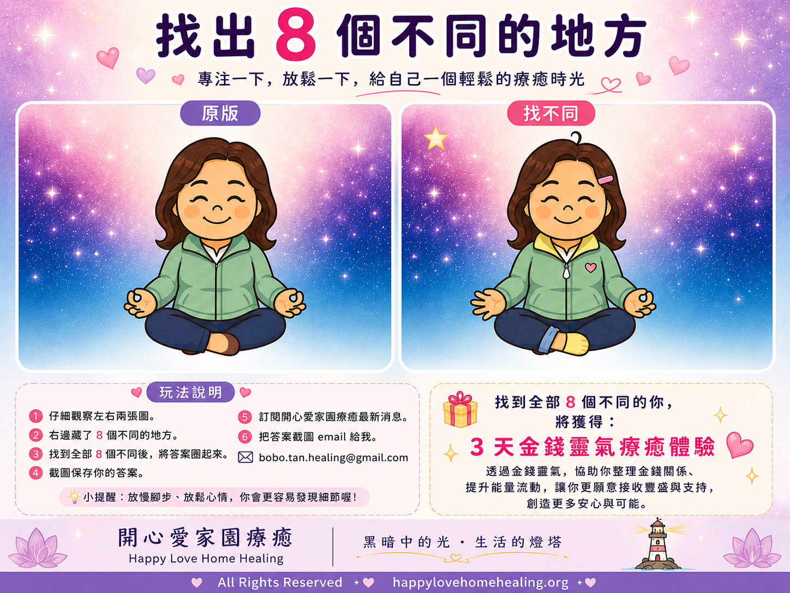
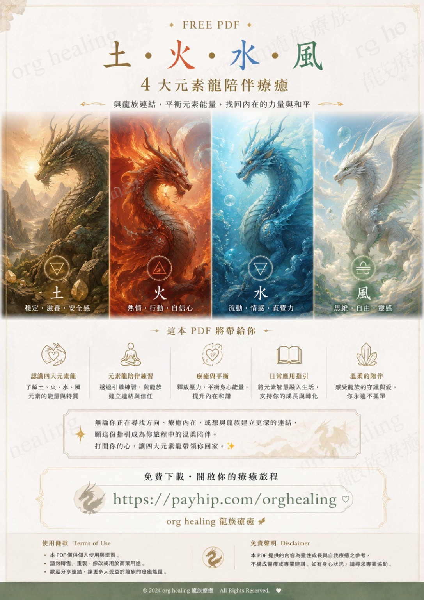
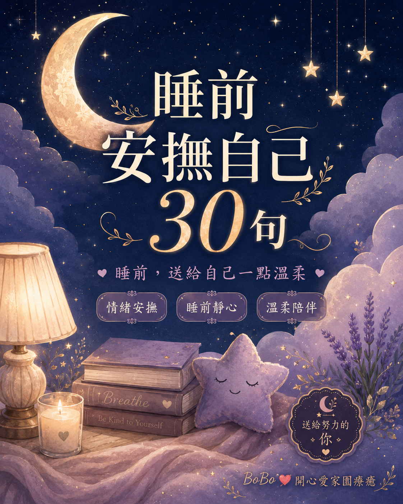
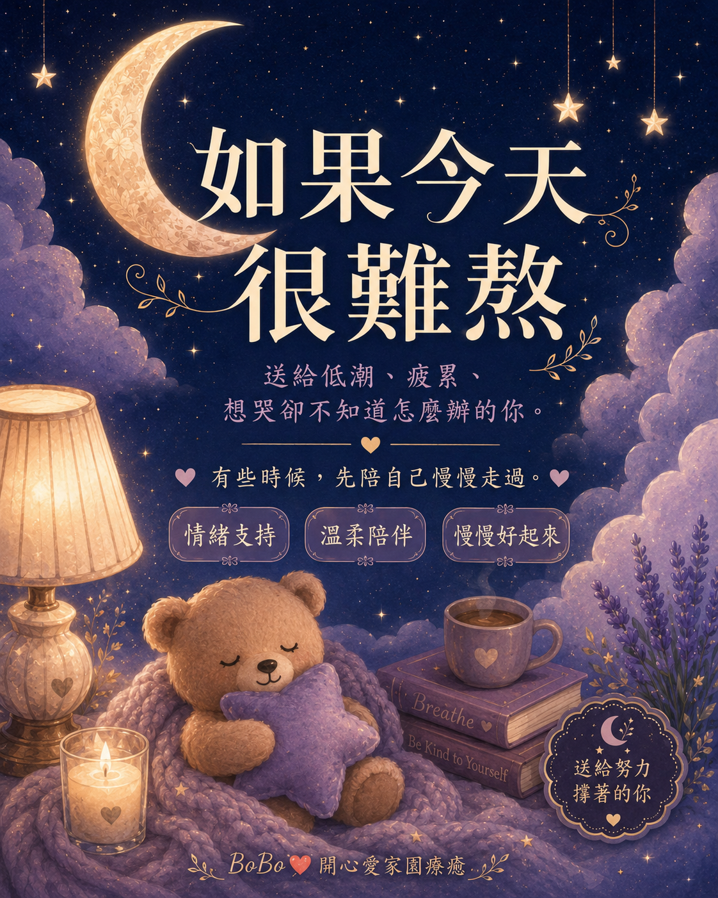
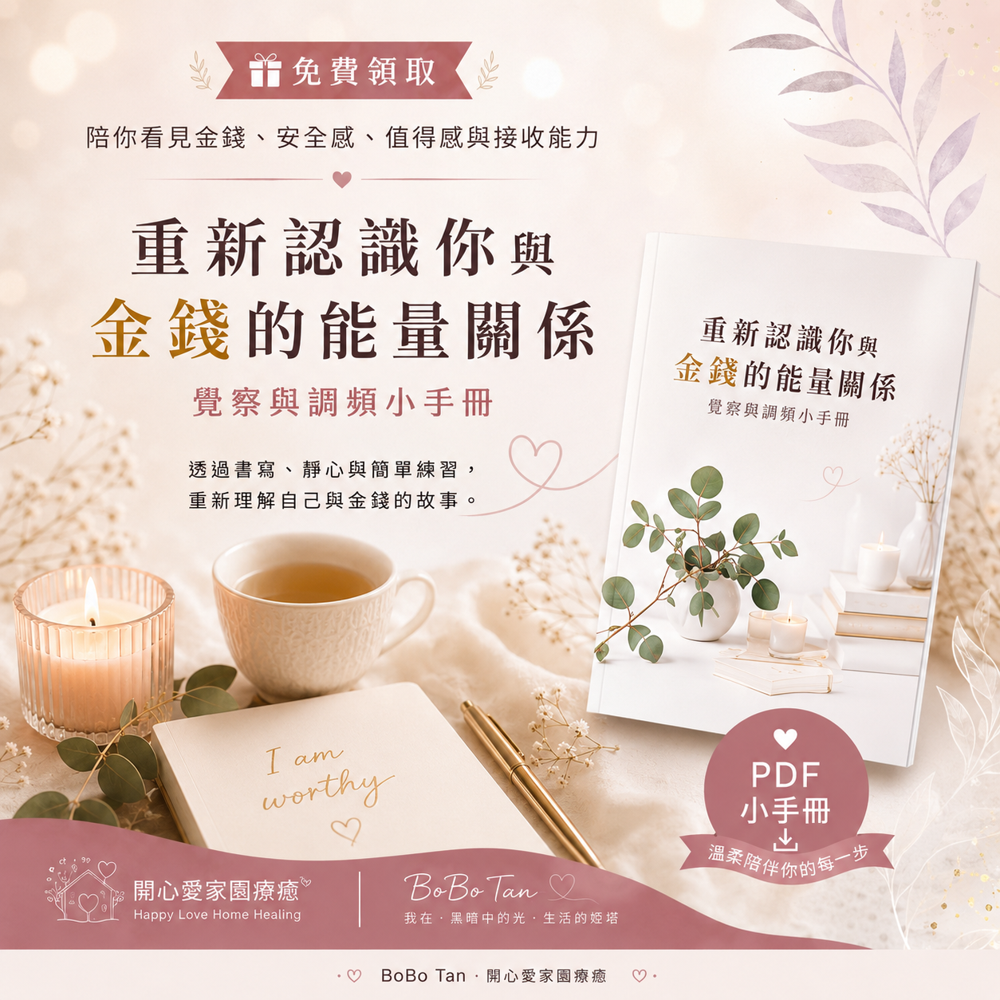

🎁 免費療癒資源館
一份溫柔的小禮物，
陪你慢慢找回自己。
收下 BoBo 為你準備的免費陪伴資源。
🔮 每月直覺占卜
這個月，你最需要找回哪一種內在力量？
深呼吸三次，在心中默念你最想知道的事情。
不需要分析，第一眼吸引你的，就是此刻給你的溫柔提醒。
🎁 BoBo 神秘寶盒
不想自己選牌嗎？
點一下寶盒，讓它為你抽出今天的 A、B 或 C。
歡迎繼續往下探索更多免費陪伴工具，
或把這個頁面分享給也需要一份溫柔提醒的人。
本互動提供娛樂、自我覺察與個人成長參考， 不代替醫療、心理、法律或財務專業意見。

🔍 找出 8 個不同｜BoBo 卡通 Logo 小遊戲
這是 BoBo 的卡通 Logo 找不同小遊戲。 左邊是原版，右邊藏了 8 個不同的地方。
你可以先把圖片截圖，圈出你找到的不同點， 當作一個輕鬆又療癒的小練習，看看自己的觀察力與專注力。
此圖已送上開心喜樂祝福，願正在玩尋找遊戲的你， 也能在過程中感到開心、放鬆與喜悅。
玩法很簡單：
- 先看左邊原版，再比較右邊的圖片。
- 找出全部 8 個不同，並把它們圈起來。
- 完成後，先到下方留下 Email 訂閱最新消息。
- 再把你圈好的答案截圖 email 給我。
準備好了就開始挑戰吧，也歡迎先到下方 訂閱最新消息。
💗 免費下載｜《是愛，還是 AI？》
AI 時代，也許每個人的手機裡，都已經有一個 AI。
今天，我想邀請你，不是用它追趕答案，而是用它陪伴自己。
不需要懂 AI，也不需要購買付費版。使用免費 AI， 就可以跟著 PDF 內的步驟，進行情緒整理、自我覺察與溫柔書寫， 重新聽見自己的感受。
適合你，如果你：
- 最近情緒很多，卻不知道如何整理
- 常常想太多，心裡很累
- 想開始寫日記，卻不知道從哪裡開始
- 想試試用免費 AI 溫柔陪伴自己
免費體驗版包含 AI 情緒陪伴 Prompt、自我覺察問題、情緒書寫練習、 睡前陪伴與簡單療癒提醒。你只需要複製 Prompt，加入自己的真實感受， 再把 AI 的回覆帶回自己的心裡慢慢閱讀。
🎁 前往 Payhip 免費下載
🐉 免費下載｜土・火・水・風 4 大元素龍陪伴療癒
透過土、火、水、風四大元素龍的象徵與陪伴，
溫柔地整理當下的狀態，找回穩定、行動、流動與清晰。
PDF 內包含四元素龍介紹、簡單呼吸與觀想練習、
日常覺察提示，以及四元素整合陪伴。

❤️ 睡前安撫自己 30 句
給睡不著、想太多、心很累的你。
一份能在夜晚陪伴自己的溫柔安撫句子。

🌙 如果今天很難熬
送給低潮、疲累、想哭卻不知道怎麼辦的你。
BoBo 溫柔陪伴小手冊。

💰 重新認識你與金錢的能量關係
陪你看見金錢、安全感、值得感與接收能力之間的關係。
透過書寫、靜心與 Workbook 練習，重新理解自己與金錢的故事。
我選擇把這份手冊開放給大家免費下載， 是希望先為金錢能量關係打開一扇門。
讓更多人願意停下來， 開始正視自己與金錢的關係， 看見過去的害怕、匱乏感與不敢接收， 也為新的理解與流動，留下一個入口。
常有人說： 「捨得，捨得；有捨，才有得。」
我願意先把這份內容分享出去， 不是因為它沒有價值， 而是因為我相信它的價值。
我也相信，當我不再用害怕失去的方式抓住一切， 而是帶著真心、信任與尊重去分享， 我與金錢之間的關係，也會變得更自在、更契合、更有流動。
這份免費分享， 也是我對金錢能量關係的一次實踐：
願意給出，也允許自己接收。
相信價值，也尊重每一份付出。
不需要現在就改變全部。
只要先願意看見，就已經是開始。
🌈 彩虹呼吸
跟著彩虹的節奏。
不需要努力，只需要慢慢呼吸。
如果感到不舒服，請停止練習並回到自然呼吸。
🧸 內在小孩數字探索
看著跳動的數字。
當你感覺「就是現在」，按下停下來。
本互動僅供娛樂、自我探索與個人成長參考。
🫧 情緒泡泡
看見現在的感受。
輕輕點一下泡泡，讓它慢慢離開。
💗 蝴蝶擁抱
雙手交叉放在胸前或肩膀。
跟著左右節奏，輕輕拍一拍自己。
請以自己感到舒服的力度與速度進行；如感到不適，請停止並回到自然呼吸。
🌙 今晚放下什麼
今天已經結束了。
有些東西，不需要一起帶進夢裡。
今晚，我可以放下……
🔔 訂閱最新消息
如果你正在參加「找出 8 個不同」活動， 可先在這裡完成訂閱，再把圈好的答案截圖傳給 BoBo。
點擊按鈕後會開啟你的 Email App，收件人會自動帶入，
網頁不公開顯示 BoBo 的 Email 地址。
請記得附上已圈出答案的截圖。
不定期收到 BoBo 的溫柔提醒、免費資源與活動消息。